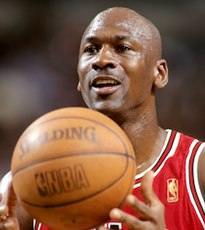

Trois titres d'affilée (1990-1993)
Lors de la saison 1990-1991, Jordan remporte son deuxième titre de NBA Most Valuable Player avec une moyenne de 31,5 points par match avec 53,9 % de réussite au tir, 6 rebonds, et 5,5 passes décisives lors de la saison régulière11. Les Bulls terminent à la première place de leur division pour la première fois en seize ans et établissent un record pour la franchise avec 61 victoires en saison régulière2
Les Bulls compilent 15 victoires pour 2 défaites lors des playoffs31 et accèdent à la première finale de NBA de l'histoire de la franchiseNote 7. Ils y battent les Lakers de Los Angeles de Magic Johnson, quatre matchs à un31. L'un des moments le plus connu de la série est dans le match no 2, lorsque, tentant un dunk, Jordan évite un contre potentiel de son ex-coéquipier des Tar Heels, Sam Perkins, en passant le ballon de sa main droite à sa main gauche alors qu'il saute puis tire. Cette action est la dernière d'une séquence de treize tirs réussis consécutivement par Jordan. Pour sa première apparition en phase finale, Jordan réussit en moyenne 31,2 points par match avec 56 % de réussite au tir, 11,4 passes, 6,6 rebonds, 2,8 interceptions et 1,4 contre33. Michael Jordan remporte son premier trophée de NBA Finals Most Valuable Player33 et, à côté de son père, pleure à la réception de celui-ci
Les Bulls poursuivent leur domination lors de la saison 1991-1992, améliorant leur record de la saison précédente avec 67 victoires pour 15 défaites24. Jordan remporte son deuxième prix consécutif de NBA Most Valuable Player avec une moyenne de 30,1 points par match avec 52 % de réussite au tir, 6,4 rebonds et 6,1 passes décisives lors de la saison régulière
Les Bulls remportent leur troisième titre NBA consécutif sur un panier décisif de John Paxson et un contre de dernière seconde d'Horace Grant40, mais Jordan reste de nouveau le catalyseur de Chicago. Il a une moyenne record en phase finale de 41 points par match au cours de la série ainsi que 8,5 rebonds, 6,3 passes décisives et 1,7 interception à 51 % de réussite40 et devient le premier joueur dans l'histoire de la NBA à remporter trois trophées consécutifs de NBA Finals Most Valuable Player
|

|

.jpg)